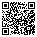

A conta da capacidade
Soma a carga de cada semana e compara com o que cada recurso consegue fazer. Mostra o gargalo e quanto falta.
72,43%
de uso do caminhão já em 2025, o recurso mais carregado da rede
Eureka 2026 - Stand 9 - PMN01
Cinco centros de coleta e um hub em São Paulo recebem embalagens pós-consumo e as devolvem à indústria. A operação está crescendo rápido.
O desafio
o material de 2025, com cada vez mais gente trazendo cada vez menos por vez.
de chegadas por ano
de material por ano
por chegada, de 2025 a 2030
Como a operação funciona
Como respondemos
Soma a carga de cada semana e compara com o que cada recurso consegue fazer. Mostra o gargalo e quanto falta.
de uso do caminhão já em 2025, o recurso mais carregado da rede
15,00 viagens por semana na simulação, o mesmo valor medido na operação real.
O que descobrimos, sem nenhuma mudança
O plano
investimento em 2026 e 2027, só realocando prensas
prensa comprada em todo o plano
teto de uso, uma margem para imprevistos
O resultado na simulação
Material recusado sobre a demanda. De 2028 em diante a trava estava no hub, com estoque médio de 363,07 m³, que cai para 45,90 m³ com os ajustes.
O que isso vale para a empresa
é o ano do segundo caminhão, dois anos antes do que a conta média indicava, com tempo para planejar a compra
nova no hub prevista para 2030, um investimento que só a simulação revelou
ferramenta própria para a empresa refazer a análise todo ano
“Nunca fiz esse quantitativo, então isso traz uma novidade super relevante para a empresa.”

Quer ver os detalhes? Leve o projeto no celular, conheça nossa página na Eureka ou fale com a equipe.